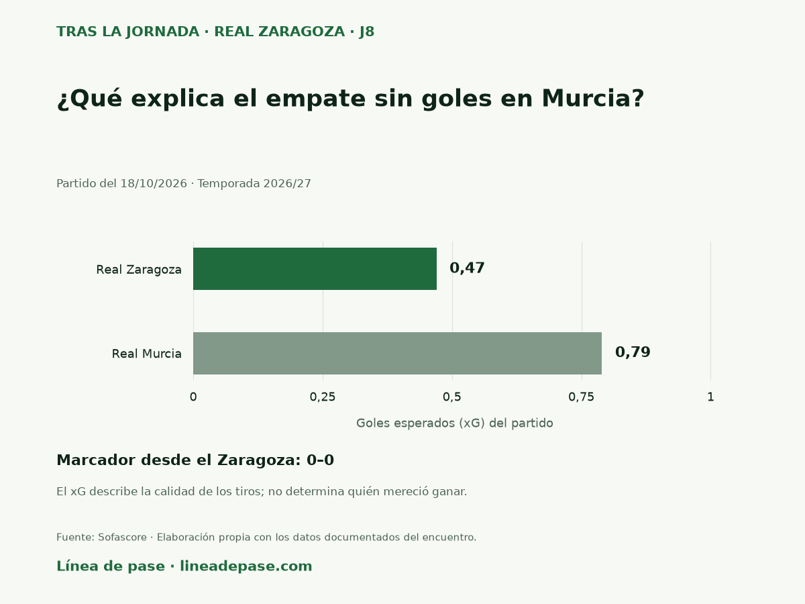

Explora Línea de pase
Tras la jornada
El último partido del Zaragoza, en una pregunta, un gráfico y una lectura breve.
Real Zaragoza · 2026/27 · Jornada 8
¿Qué explica el empate sin goles en Murcia?
El Zaragoza conservó el empate en Murcia, pero le faltó continuidad para crear peligro.
Real Murcia – Real Zaragoza · 0–0 · Partido del .

La lectura
La expulsión de Ademo cambió el final. La resistencia permitió sumar, aunque el larguero de Moyita en el descuento mostró lo estrecho que fue el margen.

Preparar esta entrega para redes
El texto y la imagen se pueden copiar y descargar. El selector identifica el origen del enlace; la publicación se realiza desde la red elegida.
La serie parte de una pregunta, un gráfico propio y una lectura breve de cada partido. Las entregas se actualizan después de revisar los datos y el análisis.
Volver a las jornadas